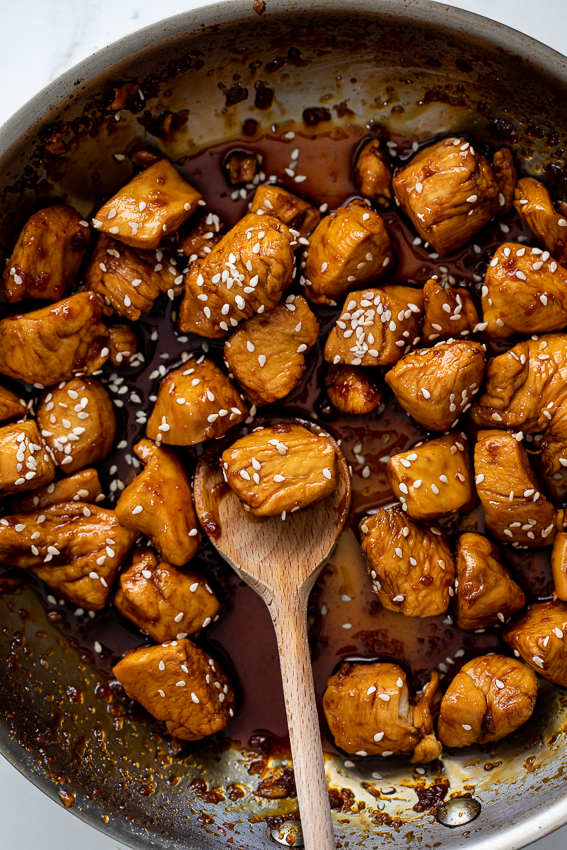

Teriyaki Chicken

Description
Teriyaki chicken is a super easy chicken recipe cooked in 10-minutes with no marinading!
Why get Japanese take out when you can make a deliciously close to authentic Teriyaki Chicken right at home!
Ingredients
- 500g chicken breasts.
- 1-2 tsp sesame oil.
- ½ cup soy sauce.
- ¼ cup rice vinegar.
- ¼ cup sake/mirin.
- 1 fresh garlic clove.
- 1 tsp crushed fresh ginger.
- 2 tbsp honey.
- 2 tbsp brown sugar.
Steps
- Heat a large frying pan over high heat.
- Pat the chicken breast pieces dry with paper towels.
- Add the sesame oil to the pan followed by the chicken. Brown the chicken well on all sides then remove from the pan and set aside.
- Combine the remaining ingredients except for the sesame seeds. Pour into the pan.
- Allow the sauce to come to a boil and cook for 1-2 minutes until it starts to thicken then add the chicken and its resting juices back into the pan.
- Allow to cook for 4-5 minutes until the chicken is cooked through and the sauce is sticky and coating the chicken.
- Sprinkle over the sesame seeds and serve.